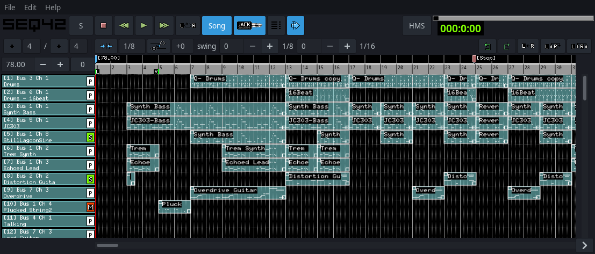
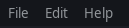
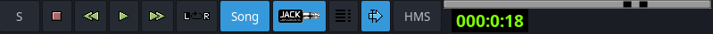
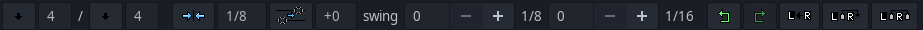
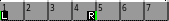
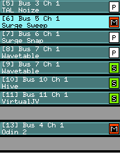
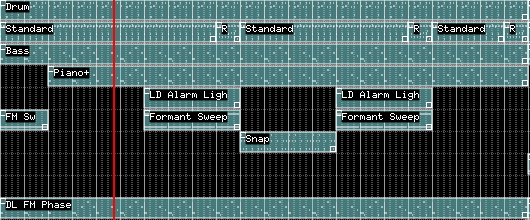

File menu
- New: Create a new seq42 project file. Seq42 supports a native file format (.s42) that is not compatible with standard MIDI files.
- Open: Open an existing seq42 (.s42) file.
- Recent Files: Display/select recent (.s42) files that were loaded or created.
- Open Playlist: Select a playlist file (see [8] Playlist Mode).
- Save: Save the current seq42 file loaded. If no current file is loaded then the same as Save as...
- Save as...: Save the current project to a given new seq42 file.
- Options: Open the options window (see [4] Options Window).
- Exit: Quit the program. If there are changes, you will be prompted to save/cancel.
Edit menu
- Sequence list: Opens the sequence list window (see [6] Sequence List Window).
- Apply song transpose: This will make any transposed sequences on a track that indicated Transposable be shifted in
the [5] Sequence Editor Window by the transpose amount as indicated on the main window transpose.
-
Delete unused sequences: Use with caution. This will remove any unused
(sequences without any song triggers) from the project.
-
Create triggers between L and R for 'playing' sequences:
The playing sequences are determined by the “Playing” checkbox from the sequence list window.
- Mute all tracks: Will mute all used tracks on the main window.
- Unmute all tracks: Will unmute all tracks on the main window.
- Toggle mute all tracks: Will toggle mute all main window tracks.
-
Import MIDI: Import any SMF type 1 MIDI file into the current project. This will append the imported file to existing projects. It will not overwrite tracks.
-
Midi export (Seq 24/32/64): Export the current project using the specific format of Seq 24/32/64 for type 1 MIDI. This will separate all triggers into individual tracks that will work with those sequencers.
-
Midi export song: Export the main window project as a type 1 MIDI file. This will combine all triggers and sequences on a track for standard MIDI type 1 format.
Help
- About: Shows the About box.
- User Manual: Show this help manual window.
Top bar

- S controls whether the sequencer pauses or resets to the starting position when stopped (see tooltip).
- Transport buttons Stop, Rewind, Play, Fast Forward the sequencer.
- L = R loops the range between the L and R markers when in song mode.
- Song will toggle between Song and Live performance (Live will use [6] Sequence List Window).
- JACK controls whether the sequencer connects to JACK transport. You can toggle transport control on/off to temporarily disable while editing.
- Sequence list launches the [6] Sequence List Window.
- Transport Follow toggles whether the grid follows the play progress line. This disables progress follow globally, including in the [5] Sequence Editor Window.
- HMS toggles the display clock between HMS (Hours/Minutes/Seconds) and BBT (Beats/Bar/Ticks).
Second bar

- Down-arrow buttons set main window time signature Beats/Length.
- Grid snap sets the precision of trigger snapping on the main grid.
-
Transpose sets global transpose of tracks with “Transposable” enabled in the track name window.
You can make transpose permanent via Edit > Apply song transpose.
-
Swing applies swing to notes (sequence-based). See [5] Sequence Editor Window for sequence swing.
- Undo reverts main window edits (grid, name, tempo) for the current session. It does not revert transpose or swing.
- Redo re-applies edits up to the last manual edit change for the same items as Undo.
- Collapse removes triggers between L and R markers and shifts triggers on the right of the R marker, left to fill the gap.
- Expand inserts empty grid space between L and R (may split triggers).
- Expand and Copy inserts new triggers to the right of R, copying triggers between L and R.
Tempo Track
- Left click on the tempo grid to add a tempo marker. A BPM pop-up appears. Set BPM via typing, spin buttons, key-binding (F9 default), or tap.
- Press Enter/Return to accept. Escape cancels. Accepted markers are grid-snapped and shown in blue, with BPM displayed to the right.
- Tempo range is 1 to 600. Drag markers (up-arrow cursor) to move them, respecting grid snap.
- The first start marker cannot be moved from the start location and cannot be deleted. Use the main BPM spinner to change starting BPM.
- Right click above a marker to delete it (except the first marker).
- During playback, reaching a tempo mark changes BPM. The main BPM spinner reflects current tempo. On stop, it returns to the original start value.
STOP markers
- Set BPM to 0 to create a stop marker.
- Stop markers are red and display “[stop]”.
- When playback reaches a stop marker, transport stops.
- In [8] Playlist Mode, if stopped by a stop marker, the playlist automatically increments to the next file.
- In live mode, only the starting BPM is used. Subsequent tempo/stop marks have no effect.
'L' and 'R' Edit Loop Track

- Left mouse drag: move L marker to pointer location.
- Right mouse drag: move R marker to pointer location.
-
CTRL + left drag: shows a green location line. Release CTRL to expand insert/paste all track triggers between L and R to the line.
-
ALT + left drag: shows a green location line. Release ALT to overwrite/paste all track triggers between L and R to the line.
- Use Collapse/Expand buttons to modify triggers based on L and R marker positions.
Track Name area

- Left click: mute track.
- Left click + drag to unused track: move to new location.
- Left click + drag to active track: swap locations.
- ALT + left drag to inactive track: copy track to landing location.
- CTRL + left drag to active track: merge (copy) sequences and triggers to landing track, and remove the starting track.
- Shift + left drag to active track: merge (copy) sequences and triggers to landing track, without removing the starting track.
- Middle click: solo track.
- Right click on name area of an unused track (left of grid): popup menu:
- New: show track name window (name, output bus, MIDI channel, Transposable).
- Insert: add a new track above the current track.
- Delete: remove the current track.
- Pack: remove unused tracks.
- Paste: duplicate tracks copied to clipboard to the current track.
- Right click on a used track: additional popup items:
- Edit: edit track settings.
- Copy: copy track to clipboard (paste to unused track).
- Cut: remove track and copy to clipboard.
- Clear triggers: remove all triggers from the track grid.
- New Sequence: open [5] Sequence Editor Window and add a new sequence to the track.
- Midi bus: set track bus and MIDI channel.
- Merge Sequence: drop down menu of sequences from other tracks to copy into current track (only shown when available).
This will also copy and merge any triggers from the selected sequence to the current track grid.
- Mouse wheel: scroll vertically.
- ALT + mouse wheel: zoom vertically in/out.
Editing Grid

- Right click mouse button and hold on empty area of active track and a pencil will appear. While holding the right button,
Left click mouse button and drag to paint a trigger.
- Right click mouse on a trigger will show a trigger menu.
- Left click on trigger will select and highlight the trigger.
- Mouse wheel will scroll vertically.
- Shift + mouse wheel to scroll horizontally.
- CTRL + mouse wheel to zoom horizontally in/out.
- ALT + mouse wheel to zoom vertically in/out.
- z key: horizontal zoom-out.
- Shift+z: horizontal zoom-in.
- 0: reset horizontal zoom.
- v key: vertical zoom-out.
- Shift+v: vertical zoom-in.
- 9: reset vertical zoom.
- Ctrl+C: copy selected trigger to clipboard.
- Ctrl+V: paste clipboard trigger after selected trigger.
- Ctrl+X: cut selected trigger and copy to clipboard.
- Delete/Backspace: delete selected trigger.
- Middle click on empty space of an open track will paste clipboard trigger to mouse location (not on another trigger).
- Middle click on a trigger will split at mouse location (grid-snapped).
- Ctrl + middle click on a trigger will paste clipboard trigger to mouse, overwriting existing trigger.
- Home: move progress line to L marker.
- End: move progress line to R marker.
- s: set L marker to progress line.
- Shift+s: set R marker to progress line.
- p: with focus on song editor grid, move play position to mouse location.
Trigger Menu
- Edit sequence: open [5] Sequence Editor Window for the trigger’s sequence.
- Export sequence: export the trigger’s sequence to a type 1 MIDI file.
- Export trigger: export the trigger to a type 1 MIDI file.
- New sequence: create a new sequence for this trigger (opens [5] Sequence Editor Window).
- Set sequence: drop down menu of sequences in the trigger’s track to attach to the trigger.
- Delete trigger: delete the trigger.
- Copy sequence: copy/duplicate a sequence (current or other tracks) and attach to this trigger.
Special Cases
Copying triggers across tracks
- This also copies the sequence into the new track.
- Left click mouse to select a trigger, then Ctrl+C to copy it to the clipboard, then middle click on the new track location to paste.
- After this paste, subsequent Ctrl+V reverts to default behavior (paste after previous paste).
- Cross-track paste is allowed only once per Ctrl+C to prevent accidental duplication.
'Fruity' input method for trigger pop-up menu (middle mouse button)
- Middle click on existing trigger: pop-up menu.
- Ctrl + left click on existing trigger: split at mouse location.
- Ctrl + left click off trigger: paste clipboard trigger to mouse location.
- Ctrl + middle click: paste clipboard trigger to mouse location.